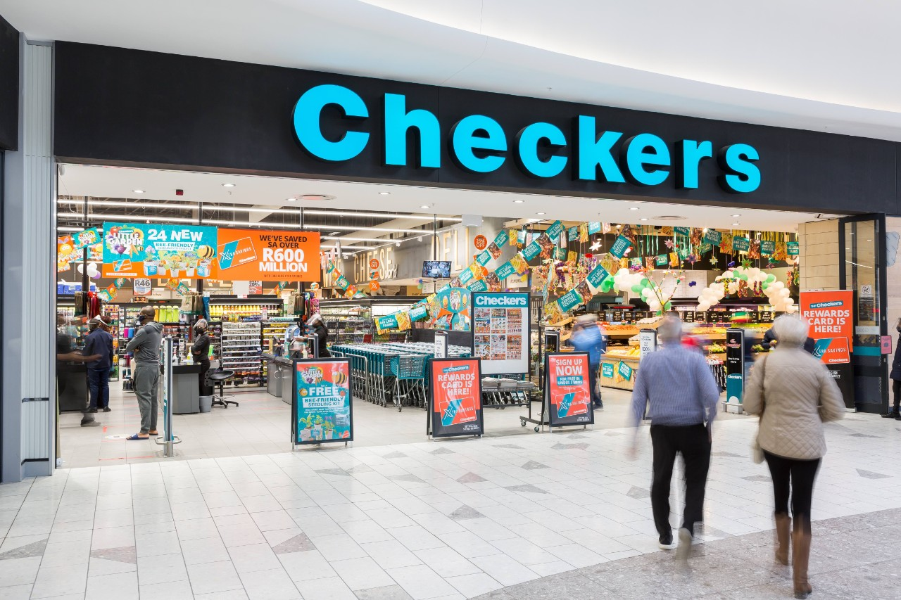

1950s Checkers counters retail price wars with its affordable House Brands. 1960s We grow from three stores to a chain of 85 stores nationally. 1968 The first ever locally manufactured trolleys are delivered to Checkers stores. 1960’s We become the first retail chain store to use high-density polyethylene bags.
